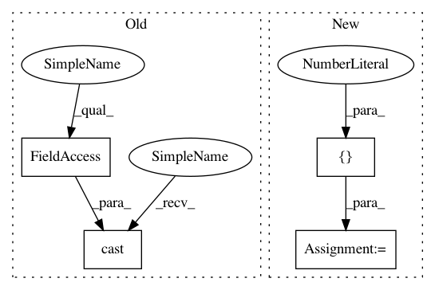

12f976730dbfe9a5bc60bbb0c8933f60098de038,niftynet/layer/resampler.py,ResamplerLayer,_resample_bspline,#ResamplerLayer#Any#Any#,131
Before Change
offset_shape = [1, -1] + [1] * out_spatial_rank + [in_spatial_rank]
offsets = tf.reshape(tf.stack(grid, 3), offset_shape)
spatial_coords = \
offsets + tf.expand_dims(tf.cast(floor_coords, tf.int32), 1)
spatial_coords = self.boundary_func(spatial_coords, in_spatial_size)
knot_size = spatial_coords.get_shape().as_list()
After Change
floor_coords = tf.floor(sample_coords)
// Compute voxels to use for interpolation
grid = tf.meshgrid([-1., 0., 1., 2.],
[-1., 0., 1., 2.],
[-1., 0., 1., 2.],
indexing="ij")
offset_shape = [1, -1] + [1] * out_spatial_rank + [in_spatial_rank]
offsets = tf.reshape(tf.stack(grid, 3), offset_shape)
spatial_coords = offsets + tf.expand_dims(floor_coords, 1)
spatial_coords = self.boundary_func(spatial_coords, in_spatial_size)
spatial_coords = tf.cast(spatial_coords, COORDINATES_TYPE)
knot_size = spatial_coords.get_shape().as_list()
// Compute weights for each voxel
def build_coef(u, d):
In pattern: SUPERPATTERN
Frequency: 3
Non-data size: 4
Instances
Project Name: NifTK/NiftyNet
Commit Name: 12f976730dbfe9a5bc60bbb0c8933f60098de038
Time: 2017-10-26
Author: wenqi.li@ucl.ac.uk
File Name: niftynet/layer/resampler.py
Class Name: ResamplerLayer
Method Name: _resample_bspline
Project Name: GPflow/GPflow
Commit Name: bd1e9c04b48dd5ccca9619d5eaa2595a358bdb08
Time: 2020-01-31
Author: st--@users.noreply.github.com
File Name: gpflow/kernels/misc.py
Class Name: Coregion
Method Name: K
Project Name: GPflow/GPflow
Commit Name: bd1e9c04b48dd5ccca9619d5eaa2595a358bdb08
Time: 2020-01-31
Author: st--@users.noreply.github.com
File Name: gpflow/kernels/misc.py
Class Name: Coregion
Method Name: K_diag
Project Name: NifTK/NiftyNet
Commit Name: 12f976730dbfe9a5bc60bbb0c8933f60098de038
Time: 2017-10-26
Author: wenqi.li@ucl.ac.uk
File Name: niftynet/layer/resampler.py
Class Name: ResamplerLayer
Method Name: _resample_bspline